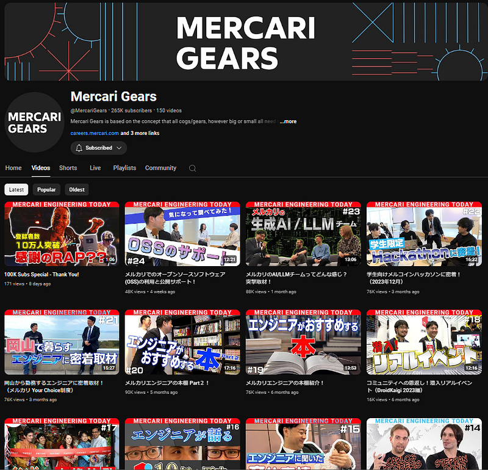
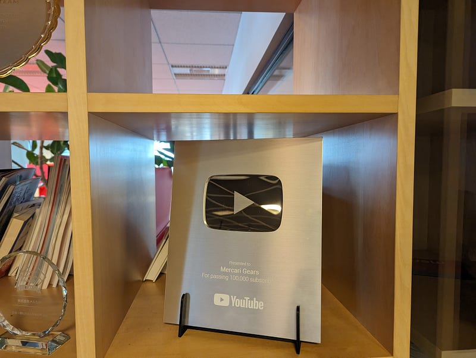

Leaving Job and Entering Summer Vacation（退職して夏休みに入ります）
Leaving Job and Entering Summer Vacation（退職して夏休みに入ります）
思えば日本に2004年に帰国してから一度も長期（2週間以上）の夏休みを取ったことはありませんでした。ということで今週をもってメルカリ最終出社とし、来週より夏休み開始となります。
7月中旬からまた社会人復帰する予定です。ではまた近いうちにお会いしましょう！
～完～
もうちょっと欲しいですか。そうですね。ではやったこと、やれなかったことについてまとめてみます。以下全て私個人の視点、意見であることを踏まえ、会社としての発信ではないことにご注意ください。
YouTubeチャンネル開設から銀の盾まで
在職中はやっぱりグループ全体のエンジニアリング部門の動画チャンネルを立ち上げられたのがよかったです。
それまで社内でYouTubeチャンネルを作ってもわりとすぐ更新しなくなってしまうという歴史があってそのなか他の人を説得して新しくチャンネルを開設するのはすっごくすっごくすっごくすっごく大変でした。開設に当たっては（実際にやっていませんが、気持ちの上では）拳で語り合う必要がありました。
ただ、運が良かった（？）のはコロナが始まったタイミングで予定していた物理イベントがキャンセルになったところだったことです（イベント自体はその後悲しい結果になりましたが…）。
そのせいで結構な額の予算が宙ぶらりんになり、そこの一部をさらっとこの企画に回せました。これがなけれどうなっていたかわかりません。
なにせ動画コンテンツ作成に予算をついやせなかったら社員で全部やらざるをえないし、そうするととてつもない労力になり早晩更新が滞るのは見えてました。なので、制作は外部に発注するというのが死守すべきベースラインだったのです。
チャンネルのコンテンツは最初は物理イベントの代替という建付けだったので真面目な技術に関する講義の動画を作っていましたが、途中でこの方式は話者（社内の人）にも制作サイドにもコストが高いことがわかりました。
そういうわけで社内のタイミングを見計らって、量産可能かつ、なるたけ話者にコストをかけない方向を模索し、制作スタッフとMercari Engineering Today(MET)というフォーマットを作りメインコンテンツをそちらに移行しました。METはグループ内のエンジニアリング部門、その中の人、プロジェクト、カルチャーを紹介する目的のコンテンツです。

個人的な思いとしては一企業のPR案件という足かせさえなければさらにおもしろい内容は作れたとは思うのですが、そこは現実と折り合いをつけながら与えられた制限の範囲内で最良のものになっているとは思います。
そしてそこから4年ほど動画の制作とプロモーションを頑張ったのもあり、動画一本あたりのビュー数が必ず30000から60000ビューくらいたたき出せるところまでこぎつけ、YouTubeから銀の盾ももらえました。
一般的なIT企業の動画のビュー数って、行ってせいぜい2～3000、普通は100以下～500ビューくらいで、正直この数を見られて「ROIが～」とつっこまれてもぐうの音も出ないと思っていました。そういうこともあって、動画の数が揃い始めたところでちゃんと予算を取ってプロモーションし始めた次第です。
それから試行錯誤して、前述のとおり動画ひとつにつきだいたい30000から60000ビューはコンスタントにつけられるようになりました。もちろんこれはプロモーションありきの値ですが、オーガニックでも5000から10000くらいは普通に行ける感じです。チャンネル登録者数もこれを書いている時点で27万人に行きそうな感じとなっています。
このあたりもなかなか「どこで」「どうやって」プロモーションするかというのに勘所があり、そのあたりの研究もなかなかおもしろかったです。
ともあれ人生で銀の盾の本物を手にする機会があるとは思っていなかったので実際にそれを手にしたときは感無量でした。

このスタンドは私が自分で設計して3Dプリントしました
更新の必要なコンテンツについてひとこと
YouTubeについてはとにかく継続的な更新が重要です。更新が止まったチャンネルは存在しないのと同じです。逆に言うと、更新を続けている限り、少しずつでもチャンネルは成長し続けることが可能です。
前述の通り、このチャンネルは4年という時間をかけて育ててきました。最初の2年間の登録者数は微々たるものでした。そこだけ見てたら正直効果があったかどうか微妙という感じでしたが、4年という時間を使ってコツコツと積み上げてきたおかげでここまで至ることができたのだと思います。
老害と思われるのを恐れずにひとつだけいうのならば、動画に限らずこの手の更新が期待されるメディアのコンテンツを企業の活動の一部として作る際、企画者／推進者が一番気を付けるべきなのは継続性だとおもいます。
継続性というのは永遠に続けられるようにするという意味ではありません。そんなものは存在しませんからね。ここで言う継続性というのは「推進者が時間が取れなくなったり、辞めたとしてもそれほど頑張らなくても定期的にコンテンツを作り続けられる」という継続性です。
この手の企画がすぐ止まってしまう理由はたいてい推進者が最初の何個かのコンテンツを作ったあとに
- 会社の期が変わったせいで短期目標が変わってしまった
- 異動があった
- はたまた単純に推進者の興味が他のものにうつってしまった
等が起こるからです。そうして推進者がそれまでのように手をかけられなくなったところで、まるで草花が萎れるかのようにコンテンツの更新が途絶えてしまうのです。
別に怠けてるわけでも悪意があるわけでもなく、何かを作り出す仕事というのはそういうものです。利用可能な時間とアイデア・やる気の泉の流量は一定ではなくて、外部要因でいくらでも変わってしまうため、推進者のコミットメント量に任せた企画は早晩止まるのです。
（まぁ、やれる人もいます。でもそういう人は超人なんで、それこそ超人がいなくなったあとどうなるの、とかありますよね）
ところが得てしてマネジメントは「この企画、俺がやります！全部やります！それなら安く済みます！」みたいなやる気がみなぎっている社員を評価しがちです。幸いにも自分のチームではそういう雰囲気はなかったのでとてもやりやすかったですが…。
私が思うにそういう企画に本当に必要なのはそのコンテンツに対して熱い情熱を持つと同時に冷めた目で現実にあわせた仕組みを作り、可能な限りコンテンツを作るコストを下げれる人だと思うのです。
なお改めて強調しておくと、ここで言うコストは内容に対するコストではありません。製作費をケチれという意味ではなく、「誰かが頑張らないと進まない」というコストを「誰かが少し頑張ると残りは自動的に進む」コストにまで下げるないし変換するという意味です。
ちなみに在職中私もモチベーションを失っていた時期もありました。そんな私の状態にもかかわらず前述の制作スタッフはガンガン制作を続けてくれたので、ありがたいことに更新ペースは一切落ちずに済みました。
ともかく、いつか更新をやめるにしろ、そこまでは最初の社員が片手間でやっていても更新が進められるような更新体制の構築こそがこの手の企画を企業がやるさいには重要だと思うのです。
まぁ、もちろん僕のあとを引き継ぐ人がそれをできる体制を本当に作れたかどうかはこれからわかるわかることなので、一応「やれるようにやった…つもり」「できてなかったらごめんね」ということでひとつよろしくおねがいいたします。
悔しさの残る物理イベント
退職にあたって一番残念なこととしては、最初それをやるために入社した物理イベントの開催を結局一回もできなかったことです。
最初はパンデミックが始まり開催が中止になりました。その後組織改編でCTO直下から外れて色々話が通しづらくなり、さらに最初にその話で雇ってくれたCTOが辞め、コロナが落ち着いたかな～と思ってもう少し小さい規模でやろうと思っていた社外・社内のイベントたち（複数）もそれぞれ全部コロナ再燃で中止になり…その後「今ならやれる！」というタイミングでオンラインイベントを企画するもまたまたコロナ関連で中止。
そして今度こそ！！！！と意気込んでできる限りの準備と並行して何ページも何ページも何ページも何ページもドキュメントを書くも、諸事情により開催の意思決定が延期につぐ延期につぐ延期があい……
そんな中とうとう最後までイベントをやり遂げることができなかったのは本当に残念です。もちろんこの中で何個もいろんな会場にロケハンしに行ってるし、関係業者とかに打診をしたり、いろんな相談もしてるけど、とにかく会社的な事情でものごとが前に進まなかったのです。
自分としてはかなり革新的な仕組みと方向性をこの何年間かずっと会社に提示してきたつもりで、これをちゃんと開催できれば確実に一目置かれたと思うので自分の手で実現できないのは心底悔しいですね。
- ポストコロナの新しい技術イベントの形・内容（変わってしまった参加者の意識、コンテンツの提供方法、交流のありかた…）
- 欲しい人にだけノベルティを渡す（ごみを増やさない）方法
- 寿司おじさん対策
- etc, etc
など結構色々組み込んでたので、これらを皆様と共有できなくて残念です。このイベントなら俺は絶対いくわ～～～と思って色々設計したつもりです。
色々難しいとは思いますが、デザインドキュメントやらコンタクトやらを残してきたので、これを使って是非他の誰かの手で実現してもらえればと思います。あと個人的には実現までこぎつけた際にはデザインドキュメントとかをキレイにして公開とかしてほしいです。
バックオフィス
あとこのイベントのために総務・経理を専門に行う人を先に雇ってもらうよう交渉し、実際に雇ってもらったのは自分の在籍中に行った行動の中でトップに近いくらいナイスな動きだったと思います。イベントの開催まではこぎつけられませんでしたが、それ以外のところで八面六臂の活躍をしていただきました。
別にエンジニアリング部門でバックオフィスの人が必ず必要ってわけじゃないんですが、外部とのやりとりが多い部署では会社の中央でバックオフィスをしている人だけじゃなくて、サテライト的にその部署のローカルな諸々を処理してくれる人がいるだけで効率が爆上がりすると思います。そういう部署の方は是非ご検討を。
その他TechPR
というわけでこの数年間はTechPR的なことや仕組みづくりをたくさんしてきました。
ブログ記事やドキュメント類もたくさん校正しましたね。みなさんが読んでたメルカリの英語記事のいくつかは（内容はともかく）文章は私が翻訳してほぼ私がゴーストライター、みたいな記事もいくつかあるはずです(笑)。
テックライティング的なところでは今後も是非自分より下の世代のエンジニアたちに伝えていきたいので、いままでもあちこちにちょっと書いてきたけど、もっとちゃんとまとめたドキュメント書かないとなぁ。社内にはいくつか残していきました。
コードは社外でOSSで書くの以外ではツール類を書いてたくらいでしたが、まぁOSSをやっていたおかげで社内のOpensource Program Office (OSPO)に入って色々インプットしたりもしてました。
もっとやりたかったこともあるけど、メルカリという会社じゃないとできないこともたくさんできたので、まぁよかったな。
ともあれ、このようなことをやってきて、今回は諸々の事情や、自分の年齢やタイミングもあって今から夏休み突入ということになりました。とりあえずBBQやって、あとは家族をつれてディズニーランドにでも行ってきたいと思います